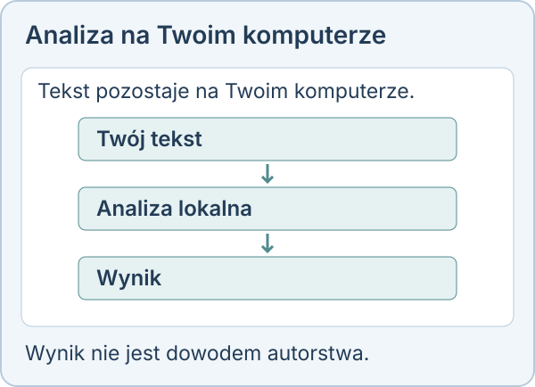
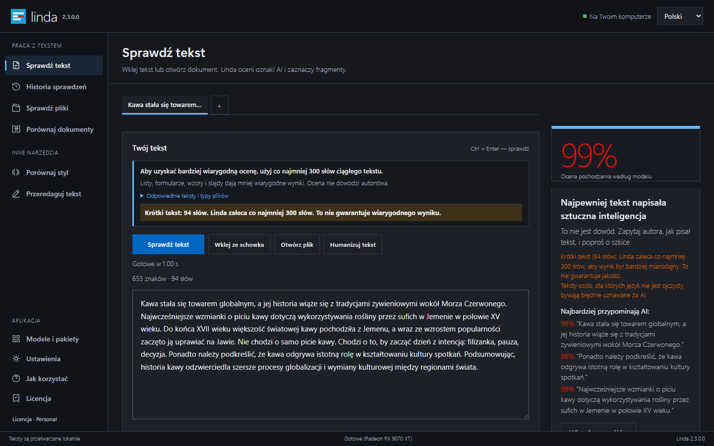

Detektor AI offline na Windows: lokalna analiza z Lindą
Detektor AI offline na Windows może przydać się wtedy, gdy chcesz sprawdzić tekst na własnym komputerze i zachować kontrolę nad jego treścią. Linda jest aplikacją desktopową, która analizuje tekst lokalnie, podświetla podejrzane fragmenty i pozwala zapisać raport PDF. Obsługuje język polski, angielski i rosyjski. Wynik ma charakter probabilistyczny: wskazuje ocenę modelu, ale nigdy nie stanowi dowodu autorstwa. Ten poradnik pomaga zaplanować pracę z aplikacją i wybrać model odpowiedni do własnych potrzeb.

Co oznacza analiza offline?
Teksty analizowane przez desktopową Lindę nie opuszczają komputera. To istotna cecha, gdy pracujesz nad własnym szkicem lub materiałem, którego nie chcesz przekazywać do usługi internetowej. Lokalna analiza oznacza, że obliczenia wykonuje Twój komputer. Nie trzeba przesyłać treści do zdalnego detektora, aby uzyskać ocenę. Warto jednak rozróżnić pracę z gotową aplikacją od jej zdobycia: instalator i pliki modeli trzeba wcześniej pozyskać.
Zanim zaplanujesz sesję bez internetu, przygotuj aplikację i potrzebny model. Potem sprawdź na własnym materiale, czy taki sposób pracy odpowiada Twoim potrzebom. Lokalność nie zastępuje rozsądnego zarządzania plikami: zapisany raport również może zawierać informacje, które chcesz zachować dla siebie.
Assay czy Loupe: od czego zacząć?
Linda oferuje dwa detektory. Linda Assay to pełny zestaw modeli o rozmiarze około 2,9 GB, najlepiej wykorzystywany z GPU. Linda Loupe to mniejszy model, około 0,3 GB, przeznaczony do szybkiej pracy na CPU. Wybór warto powiązać z komputerem, którym dysponujesz, i ilością materiału do sprawdzenia. Sam większy rozmiar plików nie daje podstawy do traktowania pojedynczej oceny jako pewnej odpowiedzi.
Twórca podaje około trzech sekund dla 3800 słów przy użyciu Loupe na nowoczesnym CPU. To deklarowany pomiar twórcy, a nie gwarancja czasu na dowolnym urządzeniu. Przed włączeniem analizy do regularnej pracy sprawdź rzeczywisty czas na swoim komputerze. Nie zakładaj też, że wynik jednego modelu rozstrzyga wszystkie wątpliwości.
Jak przygotować pierwszą analizę?
Zacznij od określenia pytania: chcesz obejrzeć własny szkic, zrozumieć podejrzany fragment czy przygotować materiał do rozmowy z autorem? Zachowaj wersję tekstu, którą sprawdzasz. Ułatwi to późniejsze odniesienie uwag do konkretnych zdań. Nie poprawiaj materiału wyłącznie po to, aby uzyskać niższy wynik. Taka zmiana nie wyjaśnia pochodzenia pierwotnego dokumentu i może odciągać uwagę od jego jakości.
Po analizie przeczytaj podświetlone fragmenty razem z otaczającymi akapitami. Zwróć uwagę na argumenty, źródła i spójność wypowiedzi. Detektor może pomóc wybrać miejsca do dokładniejszej lektury, lecz nie zastępuje tej lektury. Przy pracy nad własnym tekstem potraktuj oznaczenia jako zaproszenie do przeglądu, a nie obowiązek przerabiania każdego zdania.
Raport PDF i dalsza praca
Linda zapisuje raport PDF. Może on służyć jako zapis wykonanej analizy, który później porównasz z własnymi notatkami. Warto obok niego zachować sprawdzaną wersję tekstu oraz informację, dlaczego rozpoczęto ocenę. Jeżeli dokument zostanie zmieniony, wcześniejszy raport powinien pozostać powiązany z wcześniejszą wersją. Nie przypisuj mu automatycznie znaczenia dla nowego materiału.
Raport z detektora nie jest certyfikatem autorstwa. Gdy omawiasz go z inną osobą, wyjaśnij, że pokazuje wynik probabilistyczny i może zawierać fałszywe alarmy. Przy przekazywaniu raportu zastanów się także, komu potrzebna jest jego treść. Lokalna analiza daje kontrolę nad przetwarzaniem, ale decyzja o późniejszym udostępnieniu pliku nadal należy do Ciebie.
Dlaczego wynik może być błędny?
Fałszywy alarm oznacza, że tekst człowieka został oceniony jako podejrzany. Takie pomyłki istnieją również w Lindzie. W pomiarach twórcy na anglojęzycznych esejach TOEFL osób uczących się angielskiego odsetek fałszywych alarmów wyniósł 5,5% dla Assay i 2,2% dla Loupe. To wyniki własnych testów, bez niezależnego audytu; nie opisują automatycznie polskich dokumentów ani Twojego konkretnego przypadku.
Również spokojny wynik nie daje dowodu, że AI nie uczestniczyła w tworzeniu tekstu. Dlatego decyzji o autorze, współpracowniku lub publikacji nie warto opierać wyłącznie na wskazaniu programu. Poproś o wyjaśnienia, szkice lub źródła, jeśli są potrzebne i dostępne. Oceniaj całość materiału, zamiast szukać jednej liczby, która zastąpi rozmowę.
Bezpłatny użytek i licencje komercyjne
Linda jest bezpłatna na zawsze tylko do osobistego użytku niekomercyjnego. Jeżeli analizujesz teksty w działalności komercyjnej, przewidziano płatną licencję. Personal kosztuje 10 USD jednorazowo. Team, dla maksymalnie dziesięciu osób, kosztuje 30 USD jednorazowo. Organization/University kosztuje 500 USD rocznie. Nazwa Personal nie oznacza, że płatny wariant jest wymagany do każdego prywatnego sprawdzenia.
Dostępny jest również czternastodniowy bezpłatny okres próbny do użytku komercyjnego, bez rejestracji. Płatności obsługuje Polar jako Merchant of Record. Przy planowaniu wdrożenia oddziel koszt licencji od czasu pracownika i zasobów komputera. Dostępność lokalnego narzędzia nie zwalnia z ustalenia, kto interpretuje wyniki i jak dokumentuje dalsze decyzje.
Skąd pobrać i jak określić zakres zastosowania?
Linda jest dystrybuowana przez Microsoft Store oraz instalator w repozytorium GitHub Lendarixon/Linda; modele udostępniono na Hugging Face Lindarixon/Linda-Pro. Aplikacja zawiera też CLI. Jeżeli potrzebujesz integracji OEM lub indywidualnej kalibracji, skontaktuj się z twórcą. Nie zakładaj jednak, że lokalny detektor oferuje automatycznie wszystkie funkcje instytucjonalnego systemu sprawdzania dokumentów.
Wydawcy nie mają dostępu do JSA; informację o dostępie należy odczytywać zgodnie z FAQ JSA. Linda może wspierać przegląd tekstu, ale wynik nie jest dowodem autorstwa ani podstawą do twierdzeń o przewadze nad konkurencją. Najbardziej użyteczny proces łączy lokalną analizę, uważną lekturę i jasne zasady rozmowy o materiale.
Wynik detektora jest probabilistyczny, a fałszywe alarmy są możliwe.
